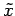
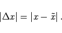
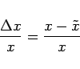
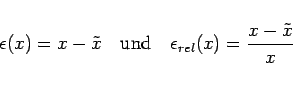

Inhalt Index DeskTop Bronstein

 Numerische Mathematik Nutzung von Computern Numerische Probleme beim Rechnen auf Computern
Numerische Mathematik Nutzung von Computern Numerische Probleme beim Rechnen auf Computern


Für das Rechnen auf Computern gelten zwar prinzipiell die gleichen Gesichtspunkte wie beim Rechnen von Hand, jedoch werden diese durch die vorhandene begrenzte und feste Stellenzahl, durch die interne duale Darstellung der Zahlen und durch die fehlende Kritikfähigkeit des Computers gegenüber Fehlern verstärkt. Hinzu kommt noch, daß auf Computern im allgemeinen wesentlich umfangreichere Rechenprozesse ablaufen, als sie manuell möglich wären.
Daraus ergeben sich Fragen nach der Beurteilung und der Beeinflussung von Fehlern, nach der Auswahl des numerisch günstigsten Verfahrens unter mathematisch gleichwertigen, aber auch nach den Abbruchbedingungen eines Iterationsverfahrens.
In den folgenden Ausführungen werden für die Angabe von Fehlern die folgenden Bezeichnungen benutzt, wobei x der exakte Wert einer Größe ist, der häufig unbekannt ist, und  ist ein Näherungswert für x:
|  | (19.263) |
|  | (19.264) |
Häufig werden auch die Bezeichnungen
|  | (19.265) |
verwendet.